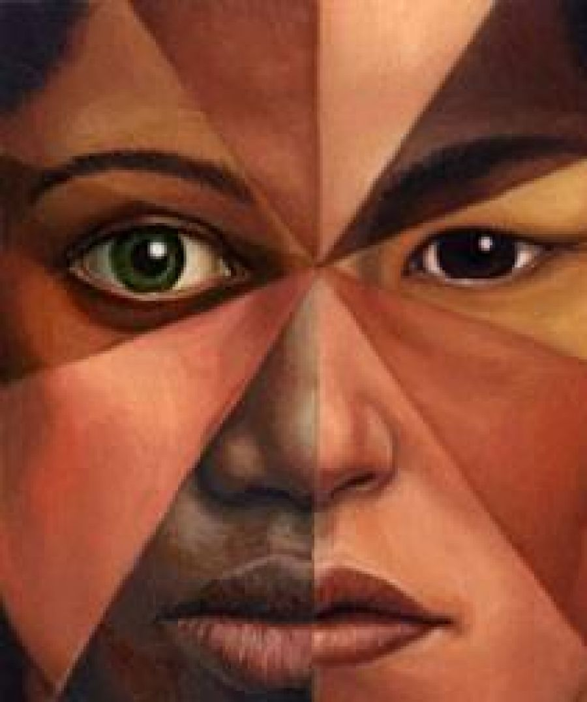

Culturas Asiatica y Africana
China y africana, llegaron como esclavos y aquí se quedaron. Danza, musica, arte y gastronomía
los grandes legados de las minorías raciales traídas desde otros continentes.
Africana:
Durante el periodo virreinal, miles y miles de hombres y mujeres africanos llegaron forzadamente a la Nueva España. Fueron traídos para trabajar como esclavos. Aunque no hay un dato certero aún, hoy se estima que en nuestro país hay unas 400 mil personas afrodescendientes. Están asentadas, sobre todo, en comunidades y regiones de Veracruz, Guerrero, Puebla y Oaxaca.
Asiatica:
La llegada de los asiáticos a América dejaría de ser un fenómeno puntual y aislado con el descubrimiento de la ruta del tornaviaje desde Filipinas en 1565, la toma de Manila en 1571 y el establecimiento del llamado Galeón de Manila en 1573 . Se ha estimado que entre 40,000 y 120,000 individuos provenientes de Asia a través del Galeón se establecieron en el centro de la Nueva España entre 1565 y 1815.La mayor parte de los asiáticos se establecieron a lo largo de la costa del Pacífico, en los pueblos localizados en la ruta hacia el interior desde Acapulco.
